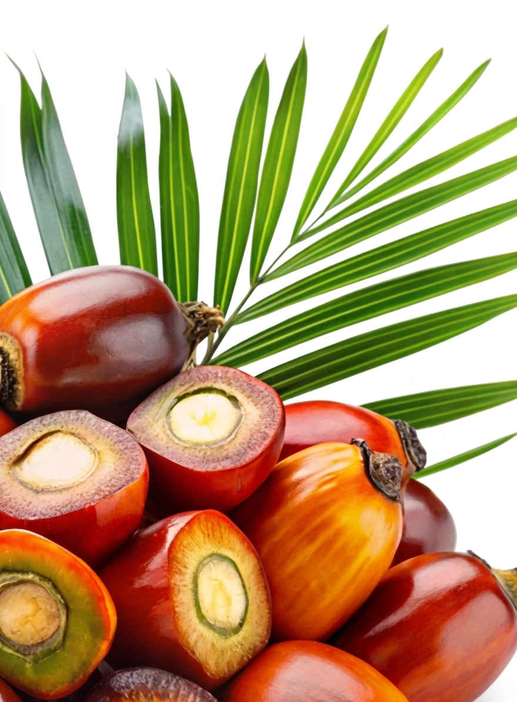

EP. 008
EP. 008Underplanting: la falsa promesa del negocio de la palma aceitera
Una conversación que pone bajo la lupa el underplanting y sus implicaciones para el negocio de la palma aceitera.

Noticias + PodcastActualidad, análisis y conversaciones sobre la palmicultura venezolana. Todo en un mismo lugar.
Recién publicado
El contenido más reciente siempre ocupa este lugar. Puedes actualizarlo con cada estreno.
EP. 008Una conversación que pone bajo la lupa el underplanting y sus implicaciones para el negocio de la palma aceitera.
Selección editorial